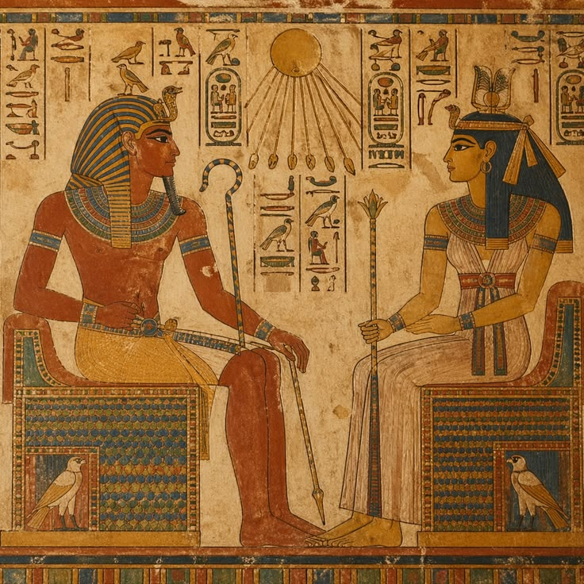
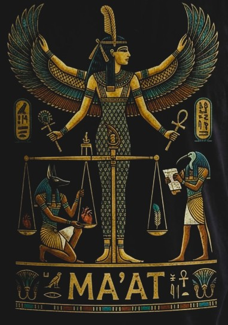
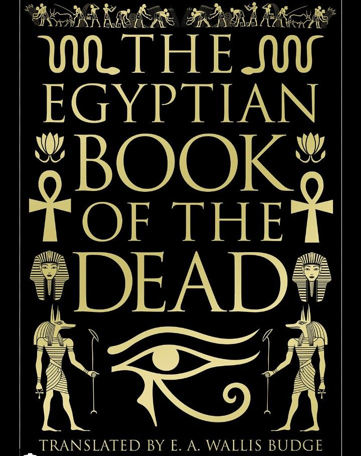
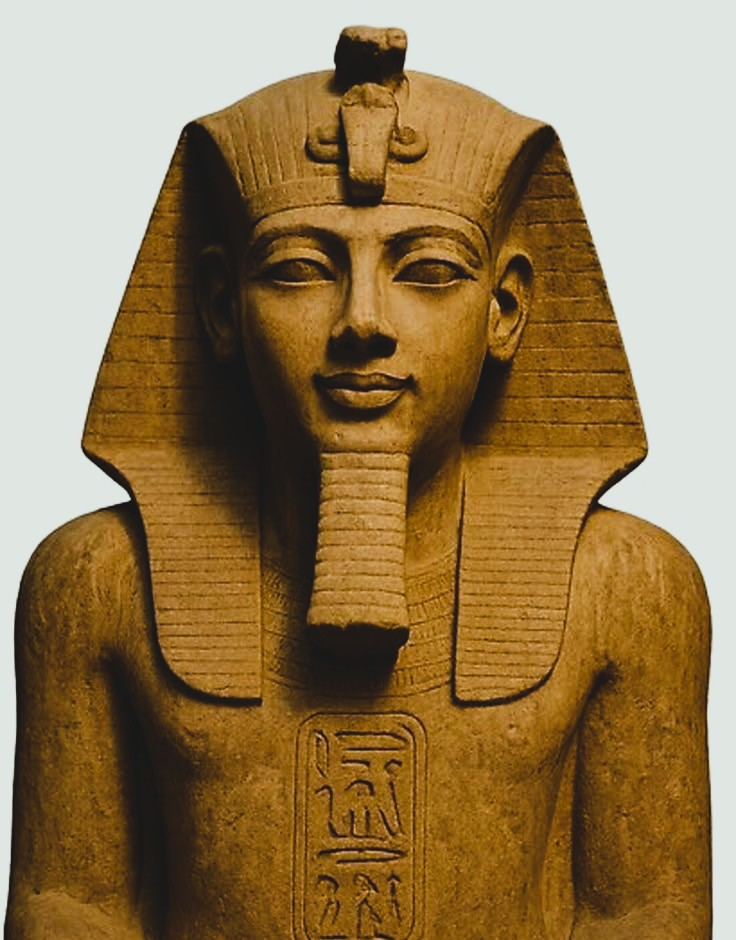
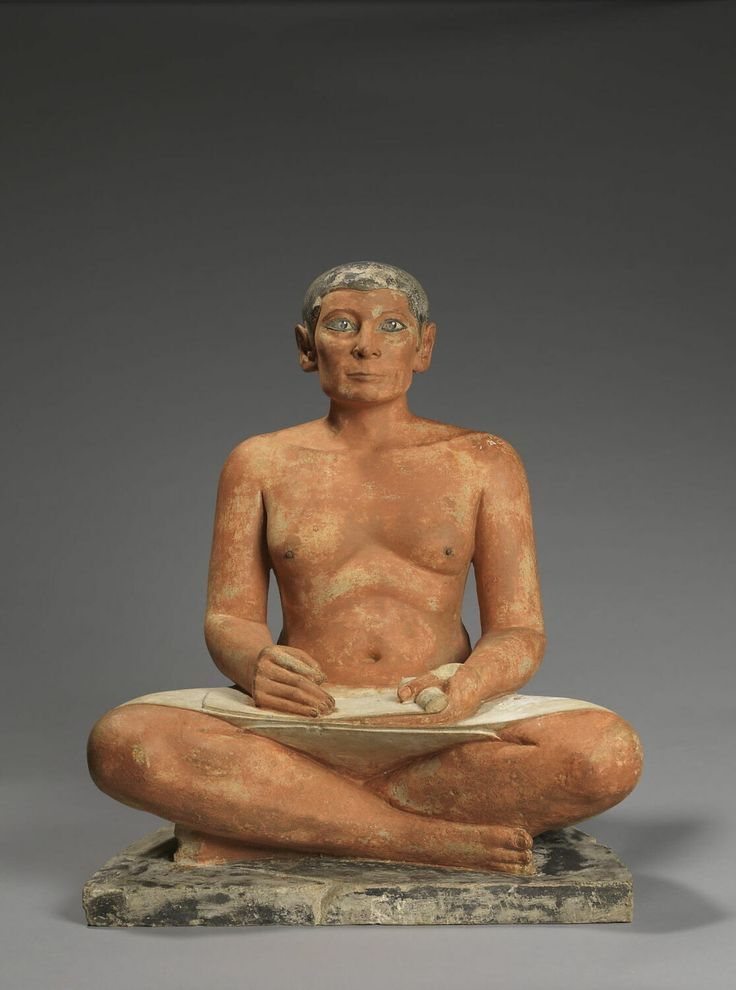

How one of the world's oldest civilizations reflected on truth,
justice, cosmic order, morality, death, and the meaning of human life
— creating a long intellectual tradition whose surviving texts reach
back thousands of years before the classical age of Greece.
Introduction
Ancient Egyptian philosophy did not develop as a separate discipline
called "philosophy" in the modern Greek or academic sense. Egyptian
thinkers did not ordinarily divide questions about ethics, politics,
religion, psychology, and the nature of reality into sharply independent
fields. Instead, reflection on these subjects appeared across a wide
range of writings, including wisdom literature, religious texts, hymns,
dialogues, instructions, narratives, funerary compositions, and ritual
writings. The absence of a modern philosophical vocabulary, however,
does not mean that Egyptian intellectual life lacked philosophical
depth.
These texts repeatedly confront questions that remain recognizably
philosophical: What makes a human being good? What is truth, and how
should it be distinguished from falsehood? What makes political
authority legitimate or responsible? How should individuals behave
toward others? What is the relationship between human life and the
larger order of nature? And what, if anything, continues when the body
dies? Egyptian answers were usually expressed through the symbolic,
religious, and social language of their own civilization, making
historical context essential to their proper interpretation.
One of the central ideas connecting many of these concerns was
ma'at, a concept associated with truth, justice, balance,
rightness, and the proper order of the world. Ma'at was not
simply a moral rule imposed upon an otherwise indifferent universe. It
represented an ideal relationship between human conduct, political
stability, social justice, and cosmic order. Disorder, falsehood,
violence, and injustice could therefore be understood not merely as
personal failures but as threats to the conditions that made collective
and cosmic life intelligible and stable.
Egyptian thought also developed a remarkably long tradition of practical
ethical reflection. Instructional texts explored the problems of speech,
leadership, humility, anger, ambition, friendship, family life, and the
responsible use of power. Figures such as Ptahhotep became associated
with traditions of wisdom that emphasized listening, restraint,
moderation, and careful judgment. These writings were shaped by the
hierarchical society in which they emerged, and they should not be
treated as simple expressions of modern equality. Nevertheless, they
reveal sustained reflection on the formation of character and the
difficult art of living well among others.
Questions about death and continued existence formed another major
dimension of Egyptian intellectual life. Across thousands of years, the
Pyramid Texts, Coffin Texts, and the collection now commonly called the
Book of the Dead explored the transformation of the deceased,
the different aspects of personal existence, divine judgment, memory,
and the possibility of life beyond bodily death. These traditions
connected the fate of the individual with ethical conduct, suggesting
that how one lived could not be separated from the larger question of
what one might ultimately become.
This page begins with the foundations of Egyptian thought and the
central importance of ma'at, before examining wisdom literature
and ethical reflection in works associated with Ptahhotep and other
traditions. It then turns to Egyptian conceptions of death, the soul,
and the afterlife before extending the story into further essential
areas: political authority and kingship, creation and the nature of
reality, skepticism and suffering, knowledge and sacred writing, and the
enduring philosophical significance of Ancient Egypt. Together, these
chapters reveal an intellectual tradition deeply concerned with the
relationship between the individual, society, nature, death, and the
larger order of existence.
Timeline at a Glance
c. 3100 BCE
The political unification of Egypt begins a long period of
centralized civilization along the Nile
c. 2400 BCE
The Pyramid Texts and early wisdom traditions preserve reflections
on kingship, death, and cosmic order
c. 2200 BCE
The Instructions of Ptahhotep become associated with the Egyptian
tradition of ethical wisdom
c. 2000 BCE
Coffin Texts and Middle Kingdom literature expand reflection on the
afterlife and the difficulties of human existence
c. 1550 BCE
The funerary tradition now known as the Book of the Dead begins to
develop in the New Kingdom
332 BCE
Alexander's conquest of Egypt begins a new era of interaction
between Egyptian and Hellenistic intellectual traditions
🏺 Egypt Before Philosophy

Ancient Egypt developed along the Nile over thousands of years,
producing one of humanity's longest continuous written traditions.
Ancient Egyptian civilization developed along the Nile over thousands of
years, creating one of the ancient world's longest and most influential
intellectual traditions. The regular cycles of the river, agriculture,
the movement of the sun, birth, death, and seasonal renewal encouraged a
powerful sense that human existence belonged to a larger and enduring
order. Egyptian society changed enormously between the Old Kingdom and
the later Greek and Roman periods, yet certain intellectual concerns
remained remarkably persistent: the relationship between order and
disorder, truth and falsehood, justice and power, mortality and
continued existence.
Calling this tradition "philosophy" requires some historical care.
Ancient Egyptian thinkers did not divide knowledge into separate
disciplines such as metaphysics, ethics, political philosophy, theology,
and psychology in the modern academic sense. Questions about justice
were connected with kingship and the gods; reflections on death involved
questions about personal identity; accounts of creation could also
explain political and social order. Egyptian thought therefore survives
primarily through religious texts, wisdom literature, hymns, narratives,
funerary compositions, and practical instructions rather than through
philosophical treatises modeled on later Greek traditions.
Yet the absence of a modern philosophical vocabulary does not mean that
ancient Egyptian intellectual life lacked philosophical depth. Egyptian
texts repeatedly ask how a human being should live, what justice
requires, whether power can be exercised rightly, what remains after
death, how knowledge should be acquired, and whether the universe
possesses an intelligible order. These are recognizably philosophical
questions even when they are expressed through myths, instructions,
poetry, or religious symbolism. The challenge is to understand Egyptian
ideas in their own historical setting rather than simply treating them
as imperfect versions of later Greek philosophy.
At the center of this intellectual world stood the concept of
ma'at. More than a simple word for morality, ma'at
expressed an interconnected range of ideas including truth, justice,
fairness, rightness, balance, and the proper order of the universe.
Disorder, injustice, violence, falsehood, and destructive behavior
threatened this order. Human beings therefore had responsibilities not
only toward themselves but toward other people, society, and the wider
cosmos.
Ma'at became one of the most important concepts through which
Egyptian thinkers connected ethics with reality itself.
Ancient Egyptian philosophy, understood in this broader historical
sense, therefore began with a profound question about order: what allows
human life and society to remain stable within a world constantly
threatened by change, death, conflict, and chaos? The answers developed
over many centuries and took different forms, from wisdom literature
about speech and character to reflections on suffering and death, from
theories of kingship to complex accounts of the soul and the afterlife.
The chapters that follow trace these major philosophical concerns
through the surviving intellectual heritage of ancient Egypt.
1️⃣ Ma'at and the Order of Reality
Truth, Justice, and Cosmic Balance

Ma'at represented truth, justice, right order, and the balance that
connected human society with the wider cosmos.
The idea of ma'at provided one of the deepest organizing
principles of Ancient Egyptian thought. It cannot be translated
adequately by a single English word because it joined together concepts
that modern philosophy often treats separately: truth, justice,
fairness, proper order, and cosmic balance. The world was understood as
possessing an order that could be maintained but was also continually
threatened by disorder. Falsehood, injustice, violence, greed, and
destructive behavior were therefore not merely private moral failures;
they represented forces capable of damaging the proper relationships on
which both society and the wider cosmos depended.
This gave Egyptian ethics a strongly relational character. To live well
was not simply to pursue individual happiness according to personal
preference, nor was morality understood purely as obedience to a list of
abstract rules. The individual existed within a network of relationships
involving family, community, political authority, the natural world, and
the divine order. Good action required sensitivity to these
relationships and an understanding of what was appropriate in a
particular situation. Egyptian ethical reflection therefore often
emphasized practical judgment, moderation, careful speech, fairness, and
self-control rather than constructing a systematic theory of morality in
the later philosophical sense.
Egyptian political thought also connected authority with the maintenance
of order. In the ideal language surrounding kingship, the ruler was
expected to uphold ma'at and resist the forces of disorder.
This did not mean that ancient Egyptian political life always achieved
justice, nor should the idealized language of royal texts be confused
with historical reality. Instead, the ideal itself is philosophically
significant: political power required ethical justification because
authority was associated with a duty to preserve stability, protect
justice, and maintain the conditions under which collective life could
continue.
Wisdom literature repeatedly extended this concern to officials and
ordinary social relationships. Those who possessed wealth or authority
were warned against arrogance, exploitation, unjust judgment, and
uncontrolled speech. Listening carefully to others could be treated as a
mark of wisdom, while impulsiveness and excessive pride were dangerous
because they disrupted relationships and distorted judgment. The
philosophical question beneath this practical advice remains strikingly
familiar: does possessing power give a person greater freedom, or does
it create greater responsibility?
The importance of ma'at also shows that Egyptian thought did
not sharply separate morality from reality. A truthful statement and a
just action could both participate in the maintenance of proper order.
This connection between the way things are and the way human beings
ought to act gives ma'at a philosophical importance extending
beyond religion. Egyptian thinkers were asking whether human conduct
could be understood as part of a larger structure of reality rather than
as a purely subjective matter of preference.
Later Egyptian funerary traditions made this relationship between
morality and cosmic order even more explicit. The deceased was judged in
relation to
ma'at, suggesting that a person's actions remained significant
beyond immediate social consequences. In this way, Egyptian thought
linked ethics, political responsibility, truth, and mortality into a
single intellectual framework. The question of justice was ultimately
not confined to courts or rulers: it became a question about what kind
of person one had become and whether one's life had contributed to order
or disorder.
2️⃣ Wisdom and the Art of Living
Ptahhotep and Egyptian Ethical Thought
The Instructions of Ptahhotep became one of the best-known works of
Ancient Egyptian wisdom literature, emphasizing restraint, listening,
justice, and proper conduct.
Ancient Egypt developed a rich tradition of instructional literature,
commonly described by scholars as the sebayt, or "teaching"
tradition. These compositions were often presented as advice from an
experienced official, father, ruler, or teacher to a younger person
entering adult and public life. They explored practical questions about
conduct, authority, friendship, family life, speech, wealth, and social
responsibility. Rather than beginning with abstract definitions,
Egyptian wisdom literature usually approached philosophy through
situations that human beings actually encounter in everyday life.
Among the most famous works is the composition traditionally known as
the
Instructions of Ptahhotep. The work is framed as the wisdom of
Ptahhotep, a vizier associated with the reign of King Djedkare Isesi
during the Fifth Dynasty. Its textual history, however, is more
complicated than the traditional attribution suggests: the surviving
composition is generally understood by scholars as a Middle Kingdom
literary work that deliberately places its teaching within an
authoritative Old Kingdom setting. This does not diminish its
importance; instead, it reveals how strongly Egyptian intellectual
culture valued the preservation and transmission of wisdom across
generations.
The ethical vision associated with Ptahhotep emphasizes self-control,
humility, patience, generosity, and the ability to listen. A person
should not assume that wisdom belongs automatically to the wealthy,
powerful, or highly educated. Knowledge can appear where one does not
expect it, and the arrogant person may be unable to learn precisely
because they believe they already know enough. This gives Egyptian
wisdom literature an important epistemological dimension: knowing is not
merely possessing information but developing the character necessary to
recognize truth and learn from others.
Speech receives particular attention throughout Egyptian ethical
thought. Words can heal relationships, persuade others, establish
justice, or create conflict and disorder. The wise person must therefore
know when to speak, when to remain silent, and how to listen before
responding. This concern with language is not superficial etiquette. It
reflects a deeper philosophical understanding that human beings live
together through communication and that careless or dishonest speech can
damage the social world. Wisdom is therefore inseparable from judgment
about context and consequences.
Egyptian instructions also examine the moral dangers created by success
and authority. A person who rises in social position may become
arrogant, forget those with less power, or mistake temporary fortune for
personal superiority. The repeated recommendation of moderation
therefore serves as a protection against the instability of human
circumstances. Wealth, office, and status can change; character is
tested by how a person behaves when circumstances become favorable as
much as when they become difficult.
Egyptian wisdom literature thus presents a practical philosophy of
character. It asks how a person should behave during conflict, when
exercising authority, when encountering ignorance, or when confronted by
anger and temptation. Its answers were shaped by the hierarchical
society in which these texts were produced, and modern readers should
not ignore that historical context. Yet its sustained concern with
humility, responsible speech, justice, self-knowledge, and moral
cultivation makes it one of humanity's oldest surviving traditions
devoted to the difficult question of how a person ought to live.
3️⃣ Death, the Soul, and the Afterlife
What Happens After Death?

Egyptian funerary literature explored death, judgment, the soul, and
the possibility of continued existence beyond physical life.
Few subjects are more closely associated with Ancient Egypt than death,
but Egyptian funerary thought was ultimately concerned with the
continuation and transformation of life. Over many centuries, a complex
body of literature developed to assist the deceased through the dangers
and transformations of the afterlife. Modern scholars distinguish major
historical collections including the Pyramid Texts of the late Old
Kingdom, the Coffin Texts of the Middle Kingdom, and the later corpus
conventionally known as the
Book of the Dead. These were not simply repetitions of one
fixed doctrine but stages within a long and evolving intellectual and
religious tradition.
The Pyramid Texts were originally associated primarily with royal
burials, while the Coffin Texts demonstrate important developments in
access to funerary knowledge among non-royal individuals. By the early
New Kingdom, compositions that Egyptologists conventionally call the
Book of the Dead developed from earlier traditions and
circulated in varied forms. The ancient Egyptian name is often
translated as "Spells for Going Forth by Day," expressing the hope that
the deceased could continue to move, act, and participate in a
transformed existence rather than remain permanently imprisoned by
death.
Egyptian thought about the person was complex and cannot be reduced to a
simple modern idea of a single, indivisible soul. Concepts such as the
ka and ba described different aspects of life,
vitality, personality, and continued existence. The exact meanings and
relationships of these concepts changed across time and context, making
simple translations misleading. Nevertheless, the philosophical problem
is clear: what remains of a person when the physical body dies, and what
conditions must be fulfilled for personal existence to continue?
This concern made death a profound question about identity. Continued
existence depended upon a relationship between the preserved body, the
person's name, ritual activity, memory, and the various aspects of the
individual described in Egyptian religious thought. To destroy or forget
a person's name could therefore carry enormous significance. Egyptian
reflections on death suggest that identity is not merely an isolated
mental object hidden inside the individual; it can also depend upon
embodiment, memory, relationships, ritual, and recognition by others.
The famous judgment scenes associated with the
Book of the Dead connected the afterlife directly with ethics.
In the weighing of the heart, the moral life of the deceased was
evaluated in relation to ma'at, symbolized by the feather
associated with truth and proper order. The image expresses a powerful
philosophical principle: death does not erase the significance of one's
actions. A human life leaves behind a moral history, and the individual
remains accountable for how they have acted toward others and toward the
order of the world.
Egyptian funerary thought therefore joined cosmology, ethics, and
personal identity into a single vision. The question "What happens after
death?" could not be separated from "What kind of life have I lived?" or
even "What makes me the person that I am?" These concerns would later
become central topics in many philosophical traditions, but ancient
Egyptian texts demonstrate that reflections on mortality, moral
responsibility, and the persistence of identity were already being
developed in sophisticated forms thousands of years before the classical
Greek philosophers.
4️⃣ Creation and the Nature of Reality
How Did the World Begin?
Ancient Egyptian thought developed several creation traditions rather
than a single universally accepted account of how the universe began.
Major religious centers such as Heliopolis, Memphis, and Hermopolis
preserved different cosmological perspectives, each emphasizing
particular divine powers and processes. This diversity is
philosophically important because Egyptian thinkers did not always seek
one exclusive narrative that would eliminate all alternatives. Different
accounts could coexist within a broad religious and intellectual
culture.
Many Egyptian creation traditions begin with a primordial condition
represented as the limitless waters of Nun. Creation involves
the emergence of differentiation and order from this undifferentiated
state. The appearance of land, light, divine beings, and the structured
cosmos therefore represents a movement from potentiality toward an
ordered world. This created a fundamental contrast between the stability
necessary for life and the ever-present possibility that order could
collapse into disorder.
The Memphite theological tradition, associated with Ptah, became
especially significant for later discussions of Egyptian intellectual
history because it describes creation through intellect and speech. In
this account, the heart and tongue play central roles in the ordering of
reality. Modern readers should avoid treating this simply as an early
version of later Greek philosophical theories, but the underlying
question remains deeply philosophical: can thought and language possess
a creative relationship to reality?
Egyptian cosmology also emphasized continual renewal rather than a
creation completed once and for all in the distant past. The daily
journey of the sun, the annual rhythms of the Nile, and the recurring
cycles of nature provided images of a world that must repeatedly
overcome darkness, instability, and death. Order was therefore not
merely a static condition. It required continual maintenance, renewal,
and resistance to destructive forces.
These cosmological traditions reinforced the ethical importance of
ma'at. Human society existed within a universe whose continued
stability depended symbolically and practically upon the preservation of
proper relationships. Egyptian philosophy therefore connected the
largest possible metaphysical question — why there is an ordered world
at all — with the most immediate ethical question: what must human
beings do to live rightly within that world?
The result is a vision of reality in which creation, order, morality,
and political life cannot be completely separated. Ancient Egyptian
cosmology was not philosophy in the modern disciplinary sense, but it
contained sustained reflection on being, change, order, causation, and
the origins of the universe. These reflections formed the metaphysical
background against which Egyptian ideas about justice and human
responsibility acquired their deeper significance.
5️⃣ Kingship, Power, and Justice
What Makes Political Authority Legitimate?

Egyptian ideals of kingship connected political authority with the
duty to preserve justice, stability, and cosmic order.
Ancient Egypt developed one of the ancient world's most enduring forms
of centralized kingship, and political authority naturally became an
important subject of ethical reflection. Egyptian texts often presented
the king as a guardian of ma'at, responsible for maintaining
order against injustice and chaos. This ideal should not be confused
with a modern theory of democracy or equality, but it nevertheless
raised a fundamental political question: what is political power for?
The ideal answer was not simply personal domination. Royal authority was
represented as having a responsibility to protect the land, maintain
justice, administer institutions, defend the vulnerable in principle,
and preserve social stability. A ruler who failed to maintain order
threatened more than their own political position; instability could be
understood as a danger to the entire structure of society. Political
authority therefore carried a moral function even within a highly
hierarchical system.
This relationship between power and justice also appears in wisdom
literature addressed to officials. Judges and administrators were
expected to exercise restraint and avoid corrupt or arbitrary decisions.
The philosophical problem is immediately recognizable: institutions
require authority in order to function, but authority without ethical
discipline can become a source of injustice. Egyptian thought repeatedly
returned to the need for those with greater power to control their own
desires and listen carefully before acting.
The Egyptian ideal of political order was therefore closely connected
with the moral character of rulers and officials. Law alone could not
guarantee justice if those responsible for applying it were arrogant,
dishonest, or careless. Wisdom, self-control, and good judgment were
necessary qualities of political life. This emphasis resembles a broader
tradition of ancient ethical thought in which the quality of
institutions depends partly upon the character of the human beings who
operate them.
At the same time, modern readers must recognize the limitations of this
political world. Egyptian society was deeply hierarchical, and its
ideals of order could support existing structures of authority as well
as criticize abuses within them. The language of justice did not
necessarily imply that all individuals possessed equal political power.
Studying Egyptian political thought therefore requires attention to both
its ethical aspirations and the historical inequalities of the society
that produced them.
Nevertheless, the connection between legitimate authority and
responsibility remains one of Ancient Egypt's most enduring political
ideas. Power was not represented solely as a privilege; ideally, it
carried obligations toward order, justice, and collective stability. The
question first expressed through Egyptian kingship continues to define
political philosophy today: when does authority deserve obedience, and
what moral responsibilities must those who govern fulfill?
6️⃣ Doubt, Suffering, and the Problem of Life
Egyptian Reflections on Despair and Uncertainty
Ancient Egyptian thought was not limited to confident affirmations of
cosmic order. Some literary works confront suffering, disappointment,
social disorder, and uncertainty with remarkable seriousness. These
texts are important because they reveal an intellectual culture capable
of questioning whether the ideals represented by ma'at were
actually realized in human experience. The gap between how the world
ought to be and how people experience it became a source of profound
reflection.
One of the most striking examples is the Middle Kingdom composition
often known as The Debate Between a Man and His Ba. The text
presents a troubled individual engaged in dialogue with his ba,
confronting suffering, death, and the value of continuing to live. The
work should not be reduced to a modern psychological category, but its
central tension is unmistakably philosophical: when life becomes painful
and uncertain, what reasons remain for continuing to exist?
Other texts sometimes grouped with Egyptian wisdom and reflective
literature also question conventional expectations. The so-called
Harper's Songs, for example, can express confidence in the afterlife
while other passages adopt a more uncertain attitude toward what human
beings can actually know about death. Such diversity is important
because it prevents us from imagining Ancient Egypt as a civilization
with one completely uniform answer to every existential question.
These works reveal an early awareness of a problem that later philosophy
would repeatedly confront: human beings desire certainty, justice, and
meaning, yet experience often provides suffering, instability, and
death. Religious tradition can offer answers, but individuals may still
encounter doubt. Egyptian literature therefore preserves not only
doctrines about how the universe should be understood but also dramatic
representations of human beings struggling with whether those
explanations are sufficient.
The philosophical significance of these texts lies partly in their form.
Dialogue, poetry, and lament allow conflicting perspectives to remain in
tension without forcing an immediate final solution. A suffering
individual can question life while another voice answers; hope and
skepticism can appear within the same literary tradition. This
demonstrates that ancient philosophical reflection did not always
proceed by constructing systematic theories. Sometimes the act of
preserving a difficult question was itself an important form of
intellectual inquiry.
Egyptian reflections on suffering and uncertainty therefore add an
essential dimension to the tradition of ma'at. Order may be an
ideal, but human experience includes disorder. Wisdom may guide life,
but it cannot remove mortality. The philosophical challenge was to
discover how a person could live meaningfully despite these limits — a
question that would later become central to Stoicism, Existentialism,
and many other philosophical traditions.
7️⃣ Knowledge, Writing, and Memory
Why Does Knowledge Matter?

Egyptian scribal culture treated writing as a means of preserving
knowledge, authority, memory, and intellectual achievement across
time.
Writing occupied a central place in Egyptian civilization because
knowledge had to be preserved across generations. Administrative
records, religious compositions, wisdom literature, funerary texts, and
literary works all depended upon a highly developed scribal culture. The
figure of the scribe therefore represented more than a person with
technical literacy. Writing offered the possibility that human thought
could survive the death of its author and continue to influence people
living centuries later.
This created a distinctive philosophical relationship between knowledge
and mortality. Human bodies die, political regimes collapse, and
individual memory fades, but written language can preserve names,
experiences, and ideas. Egyptian literary traditions occasionally
reflect explicitly upon the possibility that writers achieve a form of
endurance through their works. Intellectual creation therefore became
one answer to the problem of human impermanence: a person might not
survive physically, yet their words could continue to exist in the minds
of later readers.
The importance of writing also raised questions about education and the
transmission of wisdom. Knowledge was not assumed to arise automatically
from age alone. Young scribes and officials had to learn language,
memory, judgment, and established traditions. Instruction was therefore
understood as a process through which accumulated experience could be
transmitted from one generation to another, allowing individuals to
begin their intellectual lives with access to the achievements and
mistakes of those who came before them.
Egyptian wisdom literature nevertheless suggests that knowledge requires
more than memorization. A person may possess information and still lack
wisdom if they cannot listen, judge situations, or control their own
behavior. This distinction between knowledge and wisdom remains
philosophically important today. Facts tell us what may be true; wisdom
concerns how human beings should understand and use what they know.
Writing also became associated with authority. Texts could preserve
laws, rituals, instructions, and official decisions, giving knowledge a
degree of permanence beyond spoken conversation. Yet this also meant
that access to literacy could create social power. Egyptian intellectual
culture was deeply connected to institutions of education and
administration, reminding us that knowledge is never entirely separate
from the social structures through which it is produced and transmitted.
The Egyptian concern with writing therefore leads toward a philosophical
question that remains especially relevant in the modern world: what
happens when knowledge becomes externalized into durable forms? From
papyrus and inscriptions to books, computers, and digital archives,
human beings have repeatedly expanded memory beyond the limits of the
individual mind. Ancient Egyptian scribal culture represents one of
humanity's earliest and longest sustained attempts to understand the
value of preserving thought against the destructive force of time.
8️⃣ The Individual and the Meaning of a Good Life
Character, Fortune, and Human Responsibility
Egyptian ethical thought examined how individuals should respond to
success, failure, wealth, conflict, and the changing circumstances of
life.
Ancient Egyptian philosophy repeatedly returned to the practical
question of how a person should live. The answer was not expressed
through one universal formula but through sustained reflection on
character and circumstance. Human life could bring wealth, illness,
success, loss, political advancement, conflict, and death. Because
circumstances changed unpredictably, wisdom required more than the
pursuit of external success. A good person needed qualities that could
remain valuable even when fortune changed.
Moderation was one of these qualities. Excessive ambition, uncontrolled
anger, pride, and greed could destroy relationships and lead individuals
toward actions they later regretted. Restraint did not necessarily mean
passivity; Egyptian wisdom texts could admire competence and
achievement. The philosophical challenge was to develop strength without
arrogance and ambition without becoming destructive. Success was
valuable, but it could also become a test of character.
Humility also possessed an intellectual significance. A person who
assumes that they already possess complete knowledge becomes incapable
of learning. Listening to others therefore became both an ethical and
epistemological virtue. The wise individual recognizes the limits of
personal understanding and remains capable of revising judgment. This
concern with intellectual humility anticipates a principle that remains
fundamental to philosophical inquiry: genuine wisdom often begins with
recognizing what one does not know.
Egyptian thought also understood human beings as socially embedded.
Individual character was revealed through relationships with family,
colleagues, superiors, dependents, and strangers. The good life could
not be achieved entirely in isolation because justice, generosity,
truthfulness, and responsible speech all required other people. Personal
flourishing was therefore connected with the ability to participate
constructively in a larger social world.
This does not mean that Ancient Egyptian ethics should simply be
described as an early version of a modern theory of individual rights or
personal autonomy. Its historical setting was profoundly different.
Nevertheless, Egyptian wisdom literature clearly recognized the
importance of personal judgment and moral responsibility. Individuals
were expected to make choices about speech, behavior, authority, and
self-control, and those choices were understood as helping to shape both
their own character and the world around them.
The Egyptian search for a good life therefore brings together many of
the tradition's central ideas. To live wisely required knowledge but
also humility; power but also restraint; success but also generosity;
personal aspiration but also responsibility toward others. The ultimate
goal was not the complete control of fate, which no human being
possessed, but the cultivation of a character capable of responding well
to the changing and uncertain conditions of existence.
9️⃣ Egypt and the Ancient World of Philosophy
Legacy, Exchange, and Historical Influence
Ancient Egypt should not be understood as an isolated civilization whose
intellectual traditions developed without contact with the wider world.
Across its long history, Egypt interacted with Nubia, the Levant,
Mesopotamia, the Mediterranean world, and eventually Greek and Roman
societies. Ideas, religious practices, artistic forms, political
institutions, languages, and scientific knowledge moved through these
networks in complex ways. The history of philosophy is therefore better
understood as a history of contact and exchange than as a sequence of
completely separate civilizations.
Greek writers themselves frequently represented Egypt as an ancient
source of wisdom. Later traditions associated figures such as Pythagoras
and Plato with journeys or intellectual connections to Egypt, although
many specific stories about direct philosophical borrowing are difficult
to verify historically. Ancient admiration for Egyptian antiquity should
therefore not be transformed automatically into proof that particular
Greek philosophical doctrines originated in Egypt.
At the same time, the opposite mistake must also be avoided. Older
histories of philosophy often treated the emergence of Greek philosophy
as though serious reflection on ethics, reality, knowledge, and
existence began suddenly in the Aegean world. The surviving Egyptian
record demonstrates that sophisticated intellectual traditions
concerning justice, cosmology, political responsibility, mortality, and
wisdom existed elsewhere in the ancient world long before philosophy
became an institutional discipline in classical Greece.
The relationship between Egypt and Greek philosophy is therefore best
approached through careful historical scholarship rather than simplistic
claims of either complete independence or direct ownership. Similar
philosophical questions can arise in different cultures without one
being a copy of the other, while cultural contact can also produce
genuine exchange. Ancient intellectual history is rarely a simple story
of one civilization "inventing" an idea and another merely receiving it.
Egypt's deeper philosophical legacy lies partly in the questions
preserved by its texts. How should power be connected with justice? What
makes a person wise? Does moral action matter beyond immediate
consequences? What survives death? Can order emerge from chaos, and how
can it be preserved? These questions continued to reappear in Greek,
Roman, Islamic, African, European, and modern philosophical traditions.
Ancient Egyptian thought therefore deserves a place in the broader
history of philosophy not because it must be forced into modern
categories, but because its intellectual achievements reveal humanity's
long and diverse attempt to understand reality and live wisely within
it. Its concepts of
ma'at, moral character, political responsibility, knowledge,
mortality, and cosmic order form a distinctive philosophical tradition
whose significance becomes clearer when the history of philosophy is
understood as larger than any single civilization or canon.
👤 Major Thinkers & Voices
The key figures and intellectual traditions behind Ancient Egyptian
thought, in brief.
Ptahhotep
Traditionally c. 24th century BCE
Traditionally associated with one of Egypt's most important works of
wisdom literature on ethical conduct and responsible speech.
Kagemni
Ancient Egyptian Tradition
Associated with instructional literature emphasizing restraint,
self-control, and proper behavior.
Merikare Tradition
Middle Kingdom
A tradition of political instruction reflecting on kingship,
justice, authority, and the responsibilities of rule.
Amennakht
c. 12th century BCE
A prominent Egyptian scribe associated with instructional literature
and the intellectual culture of Deir el-Medina.
Akhenaten
c. 1353–1336 BCE
Pharaoh associated with the radical religious reforms centered on
Aten, raising major questions about divinity and religious order.
Egyptian Sages
Across Many Centuries
Scribes, teachers, priests, and officials preserved philosophical
reflection through wisdom literature, dialogue, ritual, and writing.
⚖ Ma'at — truth, justice, rightness, balance, and the
preservation of cosmic and social order
🗣 Wisdom Through Listening — knowledge requires
careful hearing, restraint, judgment, and responsible speech
🤝 Ethical Character — humility, moderation,
generosity, patience, and self-control as foundations of a good life
👑 Justice and Political Authority — rulers possess
responsibilities to preserve order and govern fairly
⚰ The Continuity of the Person — sustained reflection
on death, identity, memory, and existence beyond physical life
🌌 Cosmic Order — human morality is connected to a
larger vision of nature, society, and the structure of reality
🌍 Influence on Later Philosophy
Ancient Egyptian thought influenced later intellectual history through
its long-standing interactions with the Mediterranean and Near Eastern
worlds. Egypt was never an isolated civilization: trade, migration,
diplomacy, conquest, and cultural exchange connected it with Nubia, the
Levant, Mesopotamia, Greece, and, later, the wider Hellenistic and Roman
worlds. Egyptian religious institutions, systems of writing,
mathematical knowledge, ethical traditions, and cosmological ideas were
encountered and interpreted by people from many different cultures. The
precise routes through which particular philosophical ideas travelled,
however, remain matters of historical debate and should not be reduced
to simple claims that one civilization merely "copied" another.
Greek writers themselves often regarded Egypt as a land of great
antiquity and wisdom, although their descriptions mixed historical
observation with legend and later interpretation. Thinkers and
historians such as Herodotus wrote extensively about Egyptian customs,
while later Greek and Roman traditions increasingly associated Egypt
with ancient religious and philosophical knowledge. The famous Library
of Alexandria, established in the Hellenistic period, eventually made
Egypt one of the most important centers of intellectual exchange in the
ancient Mediterranean, bringing Egyptian, Greek, Jewish, and other
traditions into sustained contact.
Egyptian ideas also continued to be reinterpreted long after the ancient
pharaonic world had disappeared. During the Hellenistic and Roman
periods, Egyptian religious concepts became intertwined with Greek
philosophical and religious traditions, particularly in the diverse
intellectual environment of Alexandria. Later Hermetic literature,
although largely composed in the Greco-Roman period rather than
belonging directly to ancient pharaonic Egypt, presented itself through
the figure of the Egyptian sage Hermes Trismegistus and helped create a
powerful later image of Egypt as a source of primordial wisdom. This
image would influence Renaissance thinkers and later European
intellectual history.
The ethical importance of ma'at has also attracted renewed
philosophical attention. Its connection between truth, justice, social
responsibility, and cosmic order offers a striking contrast to modern
approaches that sharply separate ethics from politics or human society
from nature. Egyptian thought does not provide a single philosophical
system comparable to those of Plato, Aristotle, or Kant, but its
surviving texts demonstrate a sustained concern with questions of
justice, responsible authority, truthful speech, character, mortality,
and the conditions of a well-ordered life. These concerns continue to
make the tradition relevant to comparative ethics and the global history
of philosophy.
Today, Ancient Egyptian philosophy has become increasingly important in
broader discussions about how the history of philosophy should be
written. For centuries, many standard histories focused overwhelmingly
on Greece as the beginning of philosophy while treating Egyptian
intellectual traditions primarily under the categories of religion,
mythology, or wisdom literature. Modern scholarship has encouraged a
more careful examination of the categories themselves, asking whether
the definition of philosophy has sometimes been made too narrow by
requiring ancient thought to resemble later Greek or European forms
before it can be taken seriously as philosophical.
At the same time, a broader history must remain historically careful.
Recognizing the philosophical significance of Egyptian thought does not
require inventing direct influences for which evidence is uncertain, nor
does it require treating all ancient traditions as identical. Egypt's
texts emerged from their own languages, institutions, religious
practices, and social structures. Their importance lies partly in their
difference: they demonstrate that serious reflection on existence and
human conduct can take forms other than the dialogue, formal argument,
or systematic philosophical treatise familiar from later traditions.
Ancient Egyptian thought therefore remains significant both for what it
contributed to the intellectual history of the ancient world and for the
questions it raises about philosophy itself. What counts as philosophy?
Must philosophical reflection be separated from religion, literature,
ritual, or political life? Can wisdom literature contain genuine
arguments about the good life even when it does not use modern
philosophical terminology? Studying Egypt encourages these questions and
expands the geographical and cultural horizon through which the history
of human thought can be understood.
📊 Quick Facts
Time Period: c. 3100 BCE – 332 BCE
Key Region: The Nile Valley and Ancient Egypt
Major Traditions: Wisdom literature, ethical
instruction, cosmology, political thought, and funerary literature
Central Question: How should human beings live in
harmony with truth, justice, society, and cosmic order?
Central Concept: Ma'at — truth, justice, balance, and
right order
While Egyptian civilization developed its long traditions of wisdom,
ethics, cosmology, and reflection on the afterlife, philosophical
questions were also emerging in other ancient civilizations. In
Mesopotamia, some of humanity's earliest urban societies were producing
myths, dialogues, legal traditions, and wisdom literature concerned with
justice, suffering, mortality, and humanity's place in the cosmos.
.jpg)